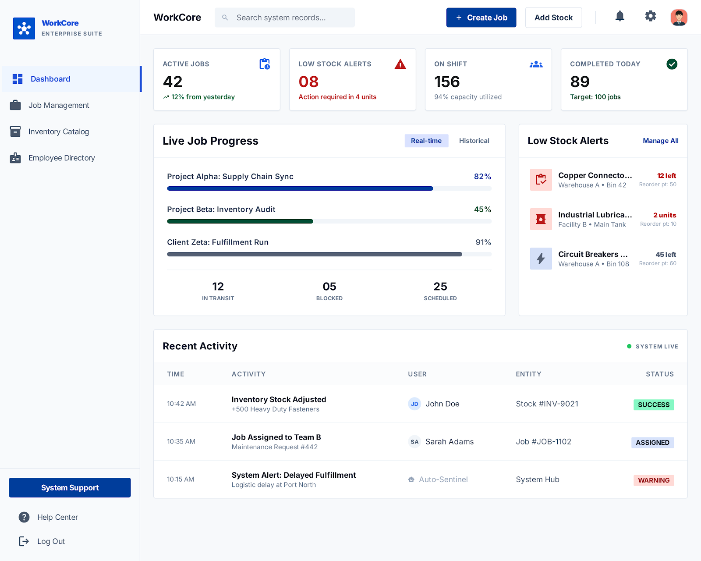
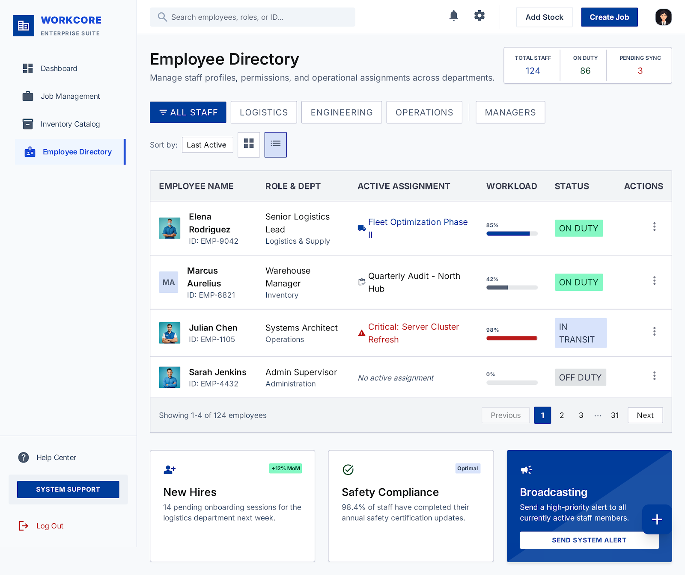
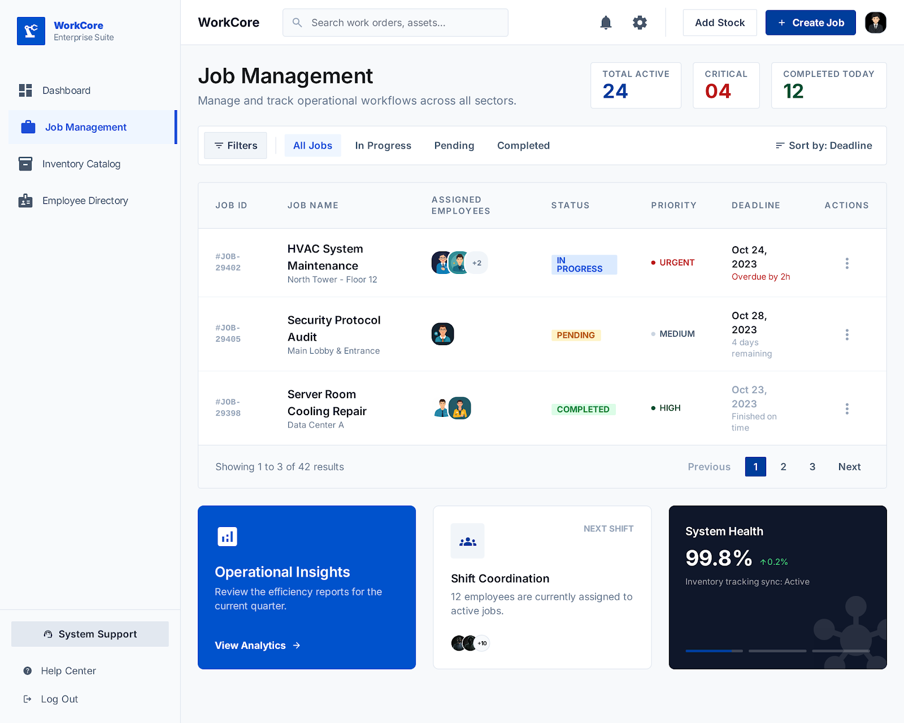
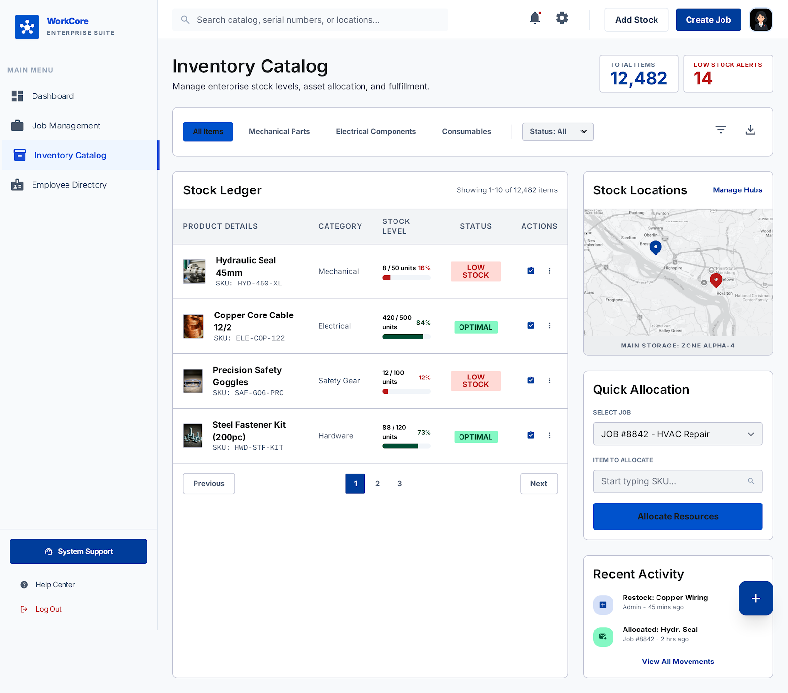

WorkCore
Unified Operations System
A job-first platform combining Human Resource Management, Work Order Tracking, and Inventory Intelligence into one cohesive system for field and operations teams.

HR Management Module
ModuleManage your workforce: profiles, departments, roles, and day-to-day attendance. Payroll can be added later if needed.

Employee Profiles
Full profile with name, contact, department, role, joining date, and profile photo. Linked to all jobs and attendance records.
Departments
Organize employees into departments (e.g., Operations, Warehouse, Field). Each department can have a manager.
Roles & Permissions
Three core roles: Admin (full access), Manager (create/assign jobs), Worker (view & update assigned tasks only).
Attendance Tracking
Log daily check-in/check-out. Shift assignment. Absence marking. Monthly attendance summary per employee.
Job / Work Order Management
CoreThis is the heart of WorkCore. Every operational activity is modeled as a Job — from simple tasks to multi-step field work orders with inventory needs.

Job Status Lifecycle
Create Work Order
Title, description, priority (Low / Medium / High / Critical), deadline, department, and optional notes or file attachments.
Employee Assignment
Assign one or multiple employees. Designated lead worker. Notifications sent on assignment.
Subtasks
Break jobs into checklist-style subtasks. Each task has its own status and can be assigned separately.
Status History
Every status change is logged with timestamp, changed-by employee, and optional notes. Full audit trail.
Priority Levels
Inventory Management Module
ModuleTrack every product, material, and asset in your operation. Inventory in WorkCore is tightly linked to Jobs — every item consumed on-site is accounted for against a work order.

Product Catalog
Add products with SKU, name, category, unit of measure, reorder point, and supplier info.
Stock Levels
Real-time available stock. Tracks: on-hand, reserved (allocated to jobs), and available quantity.
Stock Transactions
Log every stock movement: Purchase In, Job Usage, Return, Adjustment, Write-off. Full history per product.
Low Stock Alerts
Automatic alert when stock falls below the reorder threshold. Visible on dashboard and via notification.
Supplier Management
Basic supplier profiles with contact info. Link products to preferred suppliers for easier reordering.
Barcode / QR Ready
Each product can store a barcode or QR code value. Scanning can be added later.
Stock Quantity Model
Job ↔ Inventory Integration
Killer FeatureThis is what separates WorkCore from generic HRMs. When a job starts, inventory is reserved. As materials are used, stock is deducted. On completion, unused stock is returned automatically.
Allocate
Manager attaches items to a job. Stock moves from Available → Reserved.
Consume
Worker marks items as used. Stock moves from Reserved → Consumed (deducted from On Hand).
Return
Unused allocated stock is returned. Reserved → Available restores on job close.
Report
Full material cost + usage history attached to completed job record.
Dashboard & Reporting
ModuleA command center for managers and admins. Surface critical metrics at a glance: active jobs, employee utilization, and inventory health — all on one screen.
Available Reports
All jobs by status, priority, and deadline. Filter by department, employee, or date range.
Jobs completed per employee, average completion time, attendance correlation.
Which products were consumed, on which jobs, and by whom. Per-job material cost.
Auto-generated digest: jobs opened, closed, items consumed, alerts triggered.
Roles & Permissions
WorkCore uses a simple three-role access model. Each role sees and can do only what is relevant to their function.
Admin
- Full system access
- Manage employees, departments, roles
- Create / edit / delete all jobs
- Manage inventory catalog
- View all reports
- System configuration
- Manage notifications & alerts
Manager
- Create & manage jobs in their dept
- Assign employees to jobs
- Allocate inventory to jobs
- View team attendance
- View dept-level reports
- Cannot manage other departments
- Cannot modify system settings
Worker
- View assigned jobs only
- Update job/task status
- Log inventory usage
- Add notes to their jobs
- Cannot create new jobs
- Cannot view other employees' jobs
- No inventory catalog access
Notifications & Alerts
Keep your team informed without noise. Targeted alerts delivered at the right moment to the right person.
| Trigger Event | Recipients | Channel (MVP) | Later |
|---|---|---|---|
| Job assigned to worker | Assigned workers | In-app | WhatsApp, SMS |
| Job deadline approaching (24h) | Workers, Manager | In-app, Email | Push |
| Job overdue | Manager, Admin | In-app, Email | |
| Job status changed | Manager | In-app | Push |
| Low stock alert | Admin, Manager | In-app, Email | |
| Job completed | Manager, Admin | In-app | Email digest |